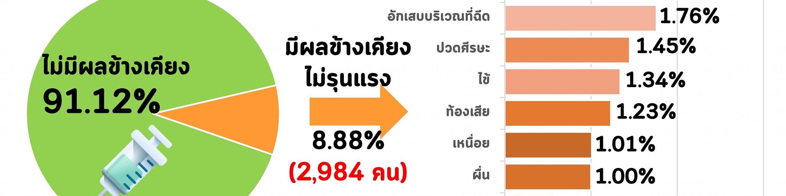

กองอายุรกรรม
โรงพยาบาลภูมิพลอดุลยเดช กรมแพทย์ทหารอากาศ
BHUMIBOL ADULYADEJ HOSPITAL
Login
|
|
A
A
A
หน่วยงาน
รพ.ภูมิพลอดุลยเดช พอ.
กองอายุรกรรม รพ.ภูมิพลอดุลยเดช พอ.
ประวัติ
พันธกิจ / วิสัยทัศน์ / ภารกิจ ขอบเขตความรับผิดชอบ และหน้าที่สำคัญ
รายนามผู้อำนวยการ
บุคลากร
สาขาวิชา
อายุรศาสตร์โรคหัวใจและหลอดเลือด (Cardiology)
อายุรศาสตร์โรคไต (Nephrology)
อายุรศาสตร์โรคระบบทางเดินอาหาร (Gastroenterology)
อายุรศาสตร์โรคต่อมไร้ท่อและเมตะบอลิสม (Endocrinology and Metabolic disorders)
อายุรศาสตร์โรคระบบการหายใจและเวชบำบัดวิกฤต (Pulmonary and Critical care medicine)
อายุรศาสตร์ประสาทวิทยา (Neurology)
อายุรศาสตร์โรคติดเชื้อ (Infectious disease)
อายุรศาสตร์โรคเลือด (Hematology)
อายุรศาสตร์มะเร็งวิทยา (Oncology)
อายุรศาสตร์โรคข้อ และรูมาติสซั่มและภูมิแพ้ (Allergy, Immunology, and Rheumatology)
โภชนศาสตร์คลินิก (Clinical Nutrition)
ตจวิทยา (Dermatology)
พิษวิทยา (Toxicology)
จิตเวชศาสตร์ (Psychiatry)
การศึกษา
การศึกษาก่อนปริญญา
การศึกษาหลังปริญญา
วิชาการ
งานวิจัย
งานประชุม
E-learning
Excellence Center
ศูนย์ความเป็นเลิศด้านโรคสมอง
ศูนย์ความเป็นเลิศด้านโรคไต
ศูนย์ความเป็นเลิศด้านโรคมะเร็ง
คลีนิค
ในเวลาราชการ
นอกเวลาราชการ
ดาวน์โหลด
LINK
ค้นหา

Previous
Next
ข่าวกิจกรรม
ประชุมวิชาการ โรคระบบทางเดินอาหาร ประจำปี 2020
หลักสูตรการฝึกอบรมแพทย์ประจาบ้านต่อยอดอนุสาขาอายุรศาสตร์โรคระบบทางเดินอาหาร
ด่วน! รับสมัครแพทย์ต่อยอดทางเดินอาหาร ( Fellow GI) ปีการศึกษา 2564 จำนวน 2 ตำแหน่ง
ประชุมวิชาการ โรคระบบทางเดินอาหาร ประจำปี 2020
ประชุมวิชาการ โรคระบบทางเดินอาหาร ประจำปี 2020
แสดงทั้งหมด
ประกาศ
ประชุมวิชาการ โรคระบบทางเดินอาหาร ประจำปี 2020
หลักสูตรการฝึกอบรมแพทย์ประจาบ้านต่อยอดอนุสาขาอายุรศาสตร์โรคระบบทางเดินอาหาร
ด่วน! รับสมัครแพทย์ต่อยอดทางเดินอาหาร ( Fellow GI) ปีการศึกษา 2564 จำนวน 2 ตำแหน่ง
ประชุมวิชาการ โรคระบบทางเดินอาหาร ประจำปี 2020
ประชุมวิชาการ โรคระบบทางเดินอาหาร ประจำปี 2020
แสดงทั้งหมด
ตารางเวรแพทย์
เนื้อหา
© โรงพยาบาลภูมิพลอดุลยเดช กรมแพทย์ทหารอากาศ All Rights Reserved
171 กองอายุรกรรมชั้น 4 อาคาร คุ้มเกล้า โรงพยาบาลภูมิพลอดุลยเดช แขวงคลองถนน เขตสายไหม กทม. 10220
e-mail: